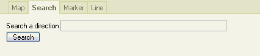
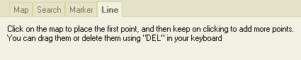
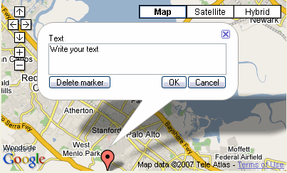
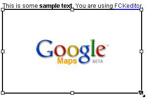

This dialog allows to handle the insertion and modification of Google Maps in FCKeditor
Press the  button
in the FCKeditor toolbar, and a new dialog will open allowing to configure
the parameters of the map that you want to show.
button
in the FCKeditor toolbar, and a new dialog will open allowing to configure
the parameters of the map that you want to show.




With these inputs you can control the dimensions of the map as they will appear in your final page. You can also drag and resize the placeholder image that appears while you are in the editor.
You can control this way the level of zoom of the map. You can use either the top dropdown or the embeded + and - controls in the map.
These inputs set the center of the map. You can also use the arrow buttons embeded in the map or even drag and drop the map itself.
Input here the location that you want to search and if it is properly found then the map will re-center automatically and add a marker to that point. To be able to find what you want separate each item with a comma: "street, city, country"
By pressing this button you can add a marker at any place in the map. It's properties window will open and you can change the text or delete the marker. You can the placement of any marker dragging it around.

This is the text that will appear if the visitor clicks on the marker (you can test it in the Map tab).
With this tab you can drag a polyline accross the map, and adjust each of its points dragging the markers that appear while you are here.
When you go close the dialog, a placeholder item will be added to your content representing the current map. It will have the proper dimensions and a black border around it, and it will feature a Google Maps logo at the center.
You can click to select it and drag one of the corners to resize it, but remember that the center of the map and the position of the marker won't change, so you might need to check again in the editing dialog that everything is fine

You can add to your page as many maps as you want, the system is prepared to work with various maps at the same time.
To edit an existing map you can select it and then click again the toolbar button, or use the entry in the context menu, or even just double click it. Whatever you want.
Existe un problema por el cual si intentas hacer una previsualización en FCKeditor de una página que contiene un mapa, la previsualización no se mostrará
If you find this plugin useful, consider making a donation so it can be further improved, any amount can help to keep the development running.
If you need some special feature for this plugin, or if you need any other kind of plugin for FCKeditor then contact me and we can discuss it: amla70 at gmail dot com
FCKeditor is © FredCK.com
Google, Google Maps and the Google Maps API are all properties of Google.